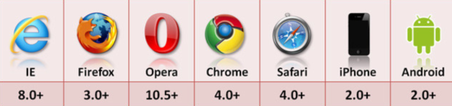

目录：
什么是
localStorage
localStorage的优势和局限
localStorage的使用
localStorage的其他注意事项
目标：
今天课程完结以后，大家可以利用localStorage实现添加商品到购物车。
一、什么是localStorage？
在HTML5中，新加入了一个localStorage特性，这个特性主要是用来作为本地存储来使用的，解决了cookie存储空间不足的问题(cookie中每条cookie的存储空间为4k)，localStorage中一般浏览器支持的是5M大小，这个在不同的浏览器中localStorage会有所不同。
二、localStorage的优势和局限
localStorage的优势
localStorage拓展了cookie的4K限制。
localStorage会可以将第一次请求的数据直接存储到本地，这个相当于一个5M大小的针对于前端页面的数据库，相比于cookie可以节约带宽，但是这个却是只有在高版本的浏览器中才支持的
localStorage的局限
浏览器的大小不统一，并且在IE8以上的IE版本才支持localStorage这个属性。
前所有的浏览器中都会把localStorage的值类型限定为string类型，这个在对我们日常比较常见的JSON对象类型需要一些转换。
localStorage在浏览器的隐私模式下面是不可读取的。
localStorage本质上是对字符串的读取，如果存储内容多的话会消耗内存空间，会导致页面变卡。
localStorage不能被爬虫抓取到。
localStorage属于永久性存储。
三、localStorage的使用
localStorage的浏览器支持情况：
